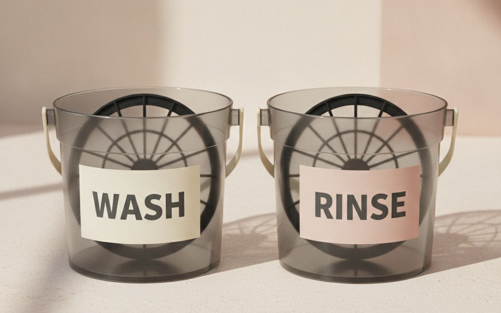
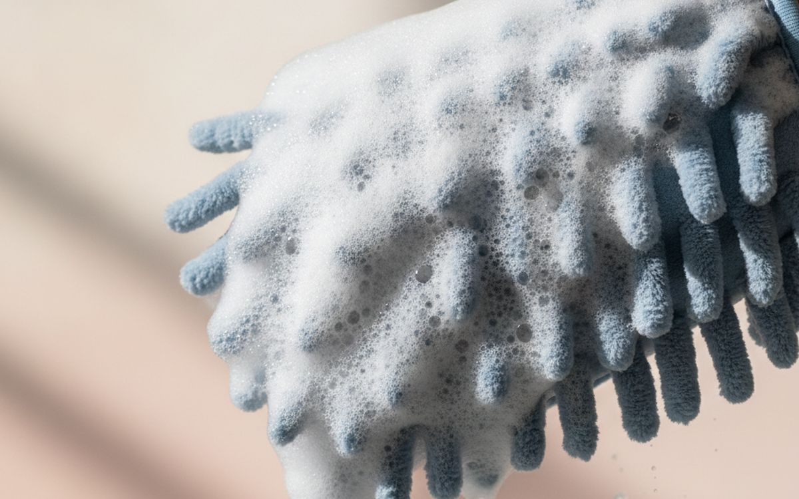
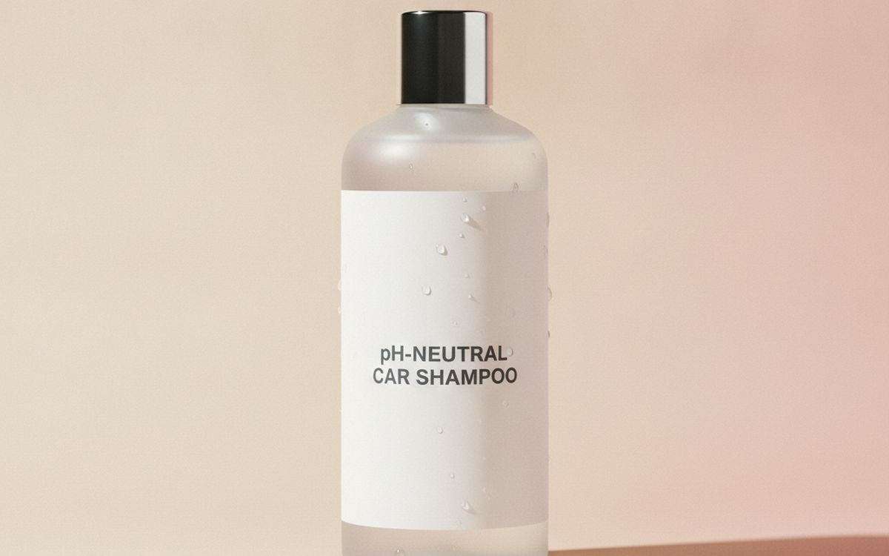
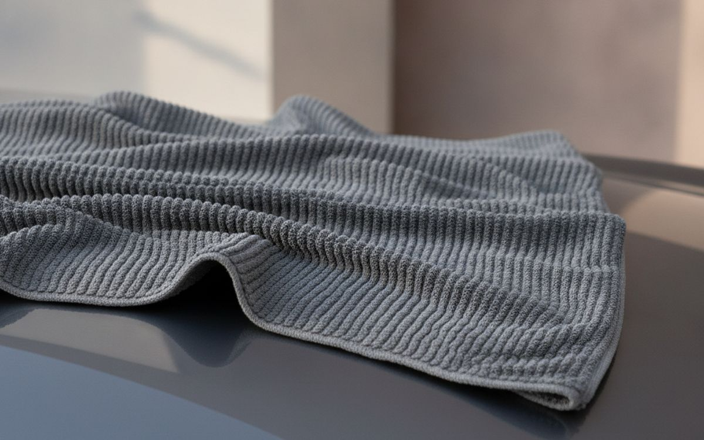
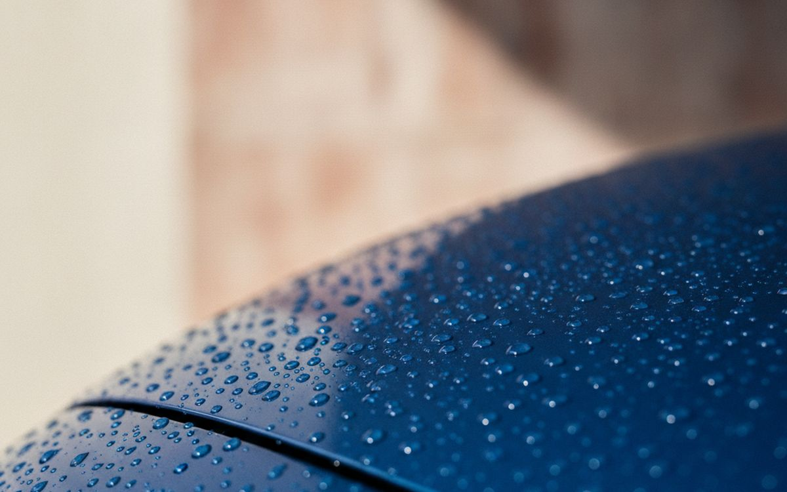
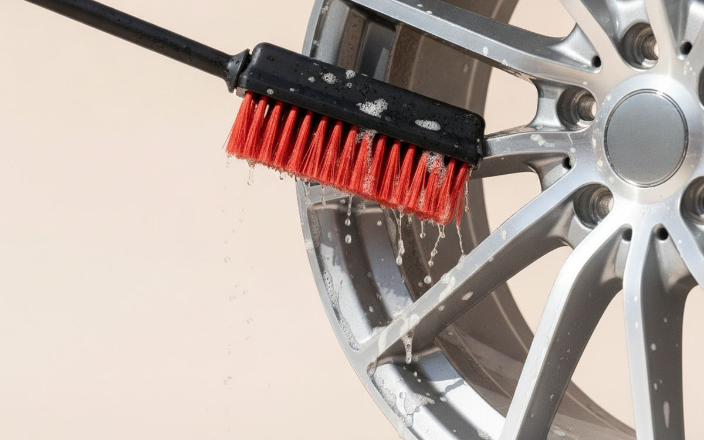
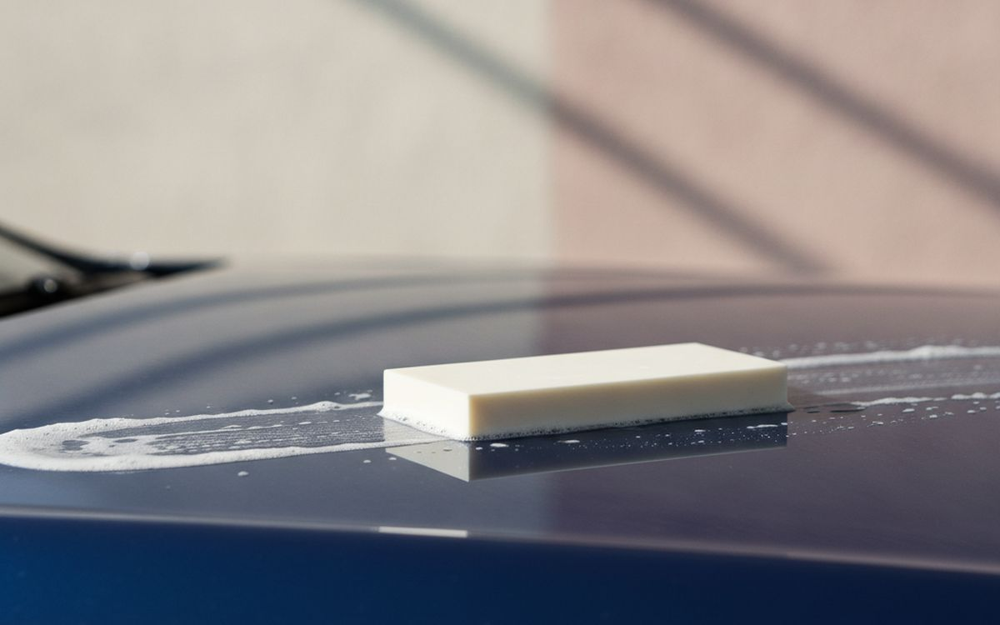
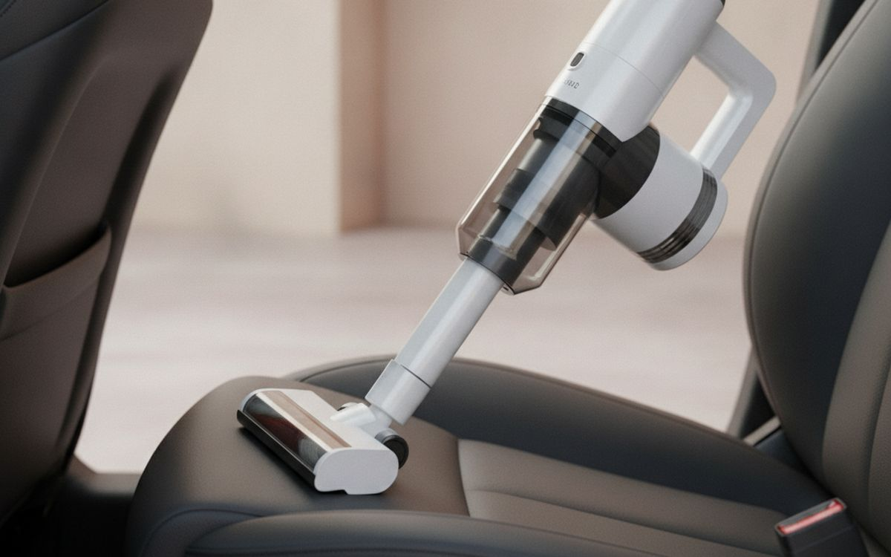
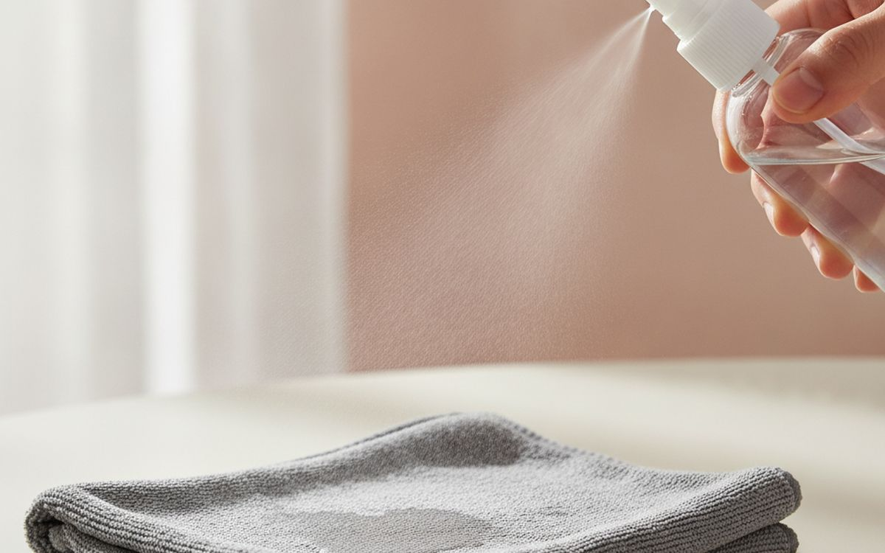
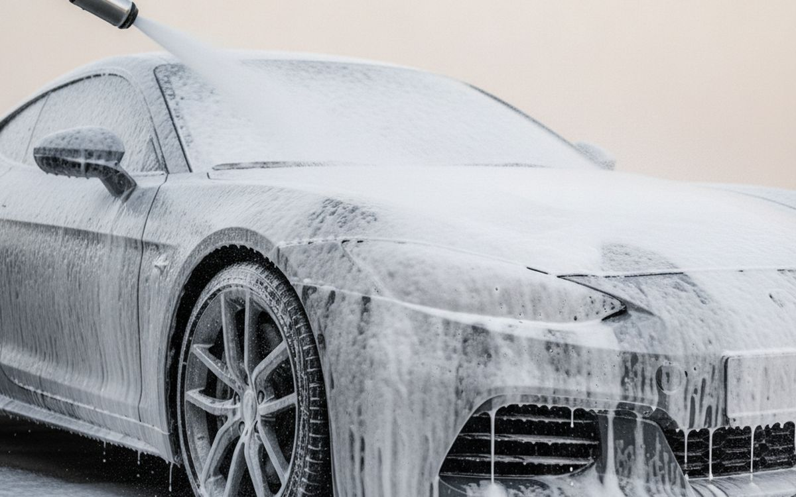

Most of the fine scratches and swirl marks on a car's paint come from washing it badly: a single bucket of dirty water, an old sponge that drags grit across the paint, and a rough towel. Automatic car washes with brushes do the same. The fix is not expensive products. It is a few simple tools and a better method.
This list is ordered by how much each item protects the paint. The first few are cheap and prevent most damage. Waxes, sealants and interior tools come after.
Prices below are approximate street prices at the time of writing and move around constantly, especially during sale events. Treat them as a rough band for budgeting, not a quote. Always check the live listing before you buy.
The short version
Two buckets with grit guards
The method that prevents most scratches
Disclosure. The links on this page are affiliate links. If you buy through one we may earn a commission at no extra cost to you. It does not affect what makes this list or the order it is in.
How we picked
These picks come from professional detailers' advice, car care communities and long-run owner reports, cross-checked against current retail listings. We have not personally tested every item here. Check local rules; some areas restrict washing cars on driveways because of runoff.
At a glance
Prices are approximate at the time of writing and change often.
The picks

01 · The method that prevents most scratchesTwo buckets with grit guards
The two-bucket method is the simplest way to stop scratching your car. One bucket holds soapy water; the other holds clean water to rinse the mitt after each panel. A grit guard at the bottom of each bucket traps dirt so it does not get back on the mitt. Wash from the top down, rinse the mitt often, and you will prevent most swirl marks. The case for it: prevents most wash scratches, cheap, and simple method. The trade-off is real: takes a bit more time and needs space for two buckets, so weigh that against how often it would actually get used.
$25-45Trade-off: Takes a bit more time
Why it is here
- Prevents most wash scratches
- Cheap
- Simple method
Worth knowing
- Takes a bit more time
- Needs space for two buckets

02 · Gentle washingA microfibre or lambswool wash mitt
Sponges trap grit on their surface and drag it across the paint. A microfibre or lambswool mitt pulls dirt into its fibres away from the paint. Have two, one for the upper car and one for the dirtier lower panels. Wash them separately without fabric softener. The case for it: traps dirt away from paint, gentle, and cheap. The trade-off is real: needs washing after use and dropped mitts must be cleaned before reuse, so weigh that against how often it would actually get used. For $10-20, it is a small, low-risk addition to the list rather than a centrepiece purchase you need to think hard about.
$10-20Trade-off: Needs washing after use
Why it is here
- Traps dirt away from paint
- Gentle
- Cheap
Worth knowing
- Needs washing after use
- Dropped mitts must be cleaned before reuse

03 · Safe cleaningpH-neutral car shampoo
Dish soap strips wax and dries out rubber seals. A pH-neutral car shampoo cleans without removing protection. It is cheap and one bottle lasts many washes. Avoid washing in direct sun, which dries soap into spots. The case for it: safe for wax and seals, cheap, and lasts many washes. The trade-off is real: dilute properly and do not wash in hot sun, so weigh that against how often it would actually get used. Priced around $10-20, it is easy to justify even if it only ends up getting occasional rather than daily use.
$10-20Trade-off: Dilute properly
Why it is here
- Safe for wax and seals
- Cheap
- Lasts many washes
Worth knowing
- Dilute properly
- Do not wash in hot sun

04 · Drying without swirlsA large microfibre drying towel
Old bath towels and chamois can scratch. A large, plush microfibre drying towel absorbs a lot of water and dries a car with a few gentle passes. Lay it flat and pat or drag slowly. Wash without softener to keep it absorbent. The case for it: dries quickly, gentle on paint, and prevents water spots. The trade-off is real: softener ruins absorbency and cheap microfibre can be thin, so weigh that against how often it would actually get used. At $15-30, it earns its place on this list without asking for a big up-front commitment either way.
$15-30Trade-off: Softener ruins absorbency
Why it is here
- Dries quickly
- Gentle on paint
- Prevents water spots
Worth knowing
- Softener ruins absorbency
- Cheap microfibre can be thin

05 · Easy protection and shineA spray sealant or ceramic spray
Paste wax takes an afternoon. Modern spray sealants and ceramic sprays go on after washing in minutes and protect for months, with strong water beading and shine. They make future washes easier because dirt sticks less. The case for it: quick protection, months of shine, and makes washing easier. The trade-off is real: less durable than pro ceramic coatings and apply out of direct sun, so weigh that against how often it would actually get used. For $15-30, it is a small, low-risk addition to the list rather than a centrepiece purchase you need to think hard about.
$15-30Trade-off: Less durable than pro ceramic coatings
Why it is here
- Quick protection
- Months of shine
- Makes washing easier
Worth knowing
- Less durable than pro ceramic coatings
- Apply out of direct sun

06 · Brake dustA wheel cleaner and brush
Brake dust is corrosive and hard to shift with car shampoo. A dedicated wheel cleaner and a soft wheel brush clean between spokes. Clean wheels first so you do not splash dirt onto clean paint. Use separate tools for wheels. The case for it: removes brake dust, protects wheels, and makes the car look new. The trade-off is real: some cleaners are harsh and keep wheel tools separate, so weigh that against how often it would actually get used. Priced around $15-30, it is easy to justify even if it only ends up getting occasional rather than daily use.
$15-30Trade-off: Some cleaners are harsh
Why it is here
- Removes brake dust
- Protects wheels
- Makes the car look new
Worth knowing
- Some cleaners are harsh
- Keep wheel tools separate

07 · Smooth paintA clay bar kit
After washing, paint can still feel rough from bonded contaminants. A clay bar with lubricant lifts them, leaving glass-smooth paint ready for sealant. Do it once or twice a year. The case for it: glass-smooth paint, better sealant bonding, and cheap. The trade-off is real: takes time and dropped clay must be thrown away, so weigh that against how often it would actually get used. At $15-25, it earns its place on this list without asking for a big up-front commitment either way. As with anything on this list, check the exact listing details and current price before adding it to a cart.
$15-25Trade-off: Takes time
Why it is here
- Glass-smooth paint
- Better sealant bonding
- Cheap
Worth knowing
- Takes time
- Dropped clay must be thrown away

08 · InteriorsA cordless car vacuum
A cordless handheld vacuum with crevice tools cleans seats, footwells and between seats without dragging a cord. Look for strong suction and a washable filter. Many home cordless vacuums work too. The case for it: quick interior cleans, no cords, and useful at home too. The trade-off is real: short battery life and cheap ones have weak suction, so weigh that against how often it would actually get used. For $40-100, it is a small, low-risk addition to the list rather than a centrepiece purchase you need to think hard about. It is a minor purchase in the context of the whole set-up, but the kind that is easy to regret skipping once you notice the gap.
$40-100Trade-off: Short battery life
Why it is here
- Quick interior cleans
- No cords
- Useful at home too
Worth knowing
- Short battery life
- Cheap ones have weak suction

09 · Dashboards and seatsInterior cleaner and microfibre cloths
A gentle all-purpose interior cleaner handles dashboards, door panels and plastic. Spray it on the cloth, not the dashboard, to avoid getting it on screens. Avoid greasy shine products that cause glare. The case for it: clean interior, cheap, and safe on most surfaces. The trade-off is real: greasy products cause glare and test on leather first, so weigh that against how often it would actually get used. Priced around $10-20, it is easy to justify even if it only ends up getting occasional rather than daily use. None of that makes it essential for everyone reading this, only worth knowing about if the description above matches how you actually use the space.
$10-20Trade-off: Greasy products cause glare
Why it is here
- Clean interior
- Cheap
- Safe on most surfaces
Worth knowing
- Greasy products cause glare
- Test on leather first

10 · Pre-washingA foam cannon or pump sprayer
A foam cannon on a pressure washer, or a pump foam sprayer for a hose, covers the car in foam that loosens dirt before you touch it. Rinsing it off removes much of the grit, so less scratching when you wash. The case for it: loosens dirt before contact, fewer scratches, and satisfying. The trade-off is real: foam cannons need a pressure washer and uses more shampoo, so weigh that against how often it would actually get used. At $25-60, it earns its place on this list without asking for a big up-front commitment either way.
$25-60Trade-off: Foam cannons need a pressure washer
Why it is here
- Loosens dirt before contact
- Fewer scratches
- Satisfying
Worth knowing
- Foam cannons need a pressure washer
- Uses more shampoo
Common questions
How do I wash a car without scratching it?
Use two buckets with grit guards, a microfibre mitt, pH-neutral shampoo and a microfibre drying towel.
Are automatic car washes bad for paint?
Brush washes can cause swirls. Touchless washes are gentler but less thorough.
How often should I wax or seal my car?
Spray sealants every few months; paste wax a few times a year.
Is dish soap okay for washing a car?
No. It strips wax and dries seals.
Today's deals
See what is discounted right now.
Deals →← All guides
As an AliExpress affiliate we earn from qualifying purchases. Prices and availability are accurate as of the date of publication and may change.